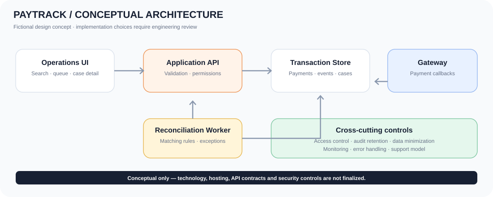
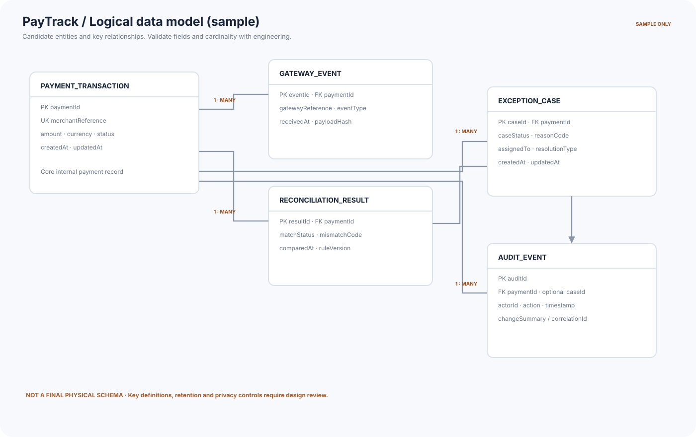
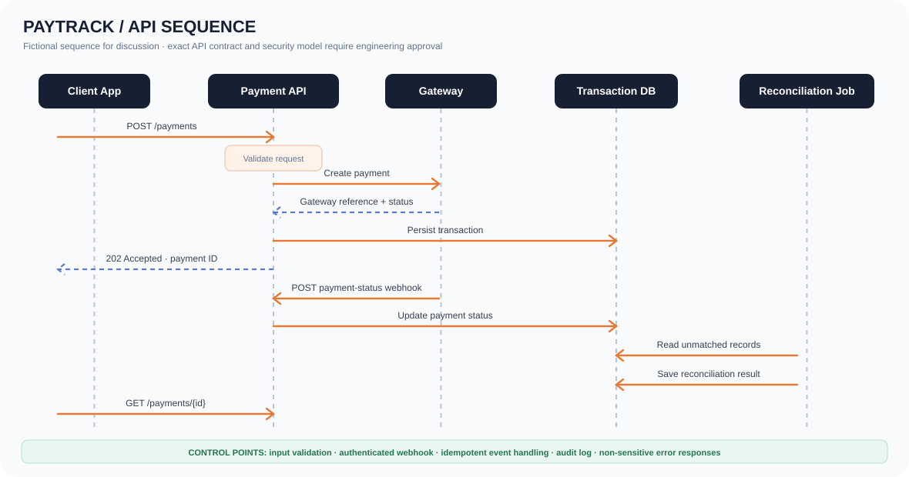

Payment reconciliation process
Matched path, validation failure, exception creation, review, resolution/escalation and audit.
Home / BA Samples
One connected fictional case study showing how a business problem becomes requirements, interface behaviours, a prioritised backlog, test coverage, process models and reviewable wireframes.
Specification, interface, data and verification. Documents are PDFs with editable Word versions.
Functional behaviour, business rules, data entities, NFRs and error states.
Open PDF ↗ 2 · IntegrationPayment submission, gateway event, reconciliation and status query.
Open SVG ↗ 3 · DataEntities and relationships for transactions, gateway events and exceptions.
Open SVG ↗ 4 · VerificationEvery requirement traced to a test; UAT entry and exit criteria.
Open PDF ↗Formal business need, objectives, scope, stakeholders, assumptions, business requirements and sign-off template.
Functional behaviour, business rules, data entities, screen requirements, NFRs, error states and decisions to confirm.
Prioritised stories with testable Given / When / Then acceptance criteria.
Requirements traced to test evidence; test-case catalogue, UAT entry/exit criteria and sign-off record.
Workshop summary, discussion themes, open decisions, action tracker and RAID log.
All five documents in one PDF.
Matched path, validation failure, exception creation, review, resolution/escalation and audit.

Portal, API, reconciliation service, data store, gateway adapter, audit and access control.

Candidate entities and relationships for transactions, gateway events, reconciliation results, exceptions and audit events.

Message flow for payment submission, gateway event, reconciliation and status query.
Business requirements mapped to functional requirements, stories and test cases.
Download ↓CSVScenarios, preconditions, steps, expected results, traceability and Not Run status.
Download ↓CSVBacklog starter with priority, acceptance criteria and traceability.
Download ↓Tell me about the role and the team.